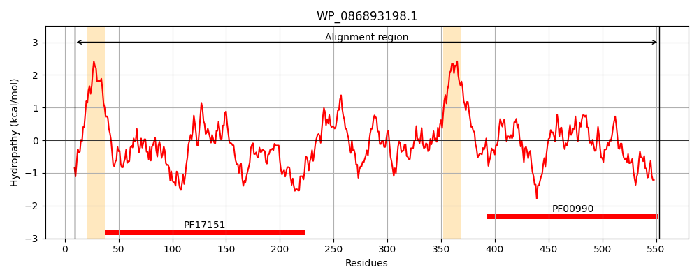
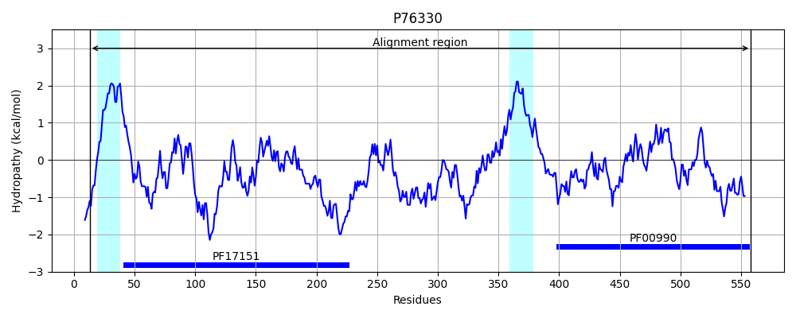
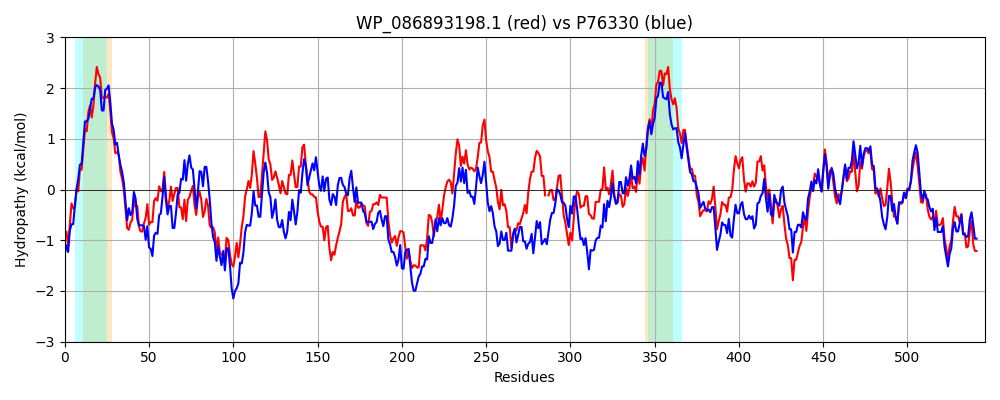

Hit Accession: P76330
Hit TCID: 9.B.34.1.4
Hit Description: gnl|BL_ORD_ID|11459 gnl|TC-DB|P76330|9.B.34.1.4 Probable diguanylate cyclase YedQ OS=Escherichia coli (strain K12) GN=yedQ PE=2 SV=2
Mach Len: 546
e:0.000000
Query TMS Count : 2
Hit TMS Count: 2
TMS-Overlap Score: 1.500000
Predicted Substrates:None
BLAST Alignment:
Score: 1477 , Bit scores: 573 bits, E-value: 0.0e+00, Alignment length: 546, Percentage identity: 53
Query: 9 INKLRHLTRPAHVVNVCFIVVLFFSTLLIWREINVLEEAYVANQRNNLANVAHEMDGLLQFNIDRMMFFRHGMQSALEQPLDIDVLRSASQRYLSQRHQEAWRVALPNRRTLPVFGVSGSVVGNNPILLKDDPLAADELMATLELGYLLNLTQHDRDFAERMQYISRSGFFTSTLPLRDESQVMTHYSQAIGALWFTRQSQRNNPGRGVIWQTFPDDDPQLEEQVVTASIPLDFAGYWRGVLAMDFSVSEIKAFLVSAMQGGQEGEYQLYDSHLNLLASSAPGNVL-TLLSPREQELLSRAFVHDNQGGLRLLTRYISWAKLRNFDGVLLRIHTLREGVRGNFGTITIALTLMWVLFTLMLLLSWLVIRRMVRNMSVLQTSLEWQAWHDALTRLLNRGALFEQAMAVASACQRSGRPLAVIQLDLDHFKRINDRYGHQAGDRVLSTVASTLASTVREGDLLGRVGGEEFCVVLPNTTLQDAVAVAERLRLRIQGREVFLHNNVTLRVSASLGVSTSEEQGEYQFEALQSVADRRLYLAKQNGRNQV 553
+ KL P HVVN+CFIVVL FSTLL WRE+ VLE+AY+++QRN+L NVA+ +D LQ+N+D+++F R+GM+ AL PLD LR A + R + AW++ L RRTLPV GVS ++V +L +++ +E+ A LE+GYLL L + E+ Y+SR+GF+ ST P V T Y + WF SQR N R V W T + E VT S+P+D YW GVL M V ++ FL +A+ +GEYQLYDS L L SS P + + PRE LL++A HD +GG+R+ +RY+SW +L +FDGVL+R+HTL EGVRG+FG+I+IALTL+W LFT MLL+SW VIRRMV NM VLQ+SL+WQAWHD LTRL NRGALFE+A +A CQ P +VIQ+DLDHFK INDR+GHQAGDRVLS A ++S++R D+ GRVGGEEFCV+LP +L +A VAER+RL++ +E+ + + T+R+SASLGVS+SEE G+Y FE LQS+ADRRLYLAKQ GRN+V
Sbjct: 13 LKKLARRLGPGHVVNLCFIVVLLFSTLLTWREVVVLEDAYISSQRNHLENVANALDKHLQYNVDKLIFLRNGMREALVAPLDFTSLRDAVTEFEQHRDEHAWKIELNRRRTLPVNGVSDALVSEGNLLSRENESLDNEITAALEVGYLLRLAHNSSSMVEQAMYVSRAGFYVSTQPTLFTRNVPTRYYGYVTQPWFIGHSQRENRHRAVRWFTSQPEHASNTEPQVTVSVPVDSNNYWYGVLGMSIPVRTMQQFLRNAIDKNLDGEYQLYDSKLRFLTSSNPDHPTGNIFDPRELALLAQAMEHDTRGGIRMDSRYVSWERLDHFDGVLVRVHTLSEGVRGDFGSISIALTLLWALFTTMLLISWYVIRRMVSNMYVLQSSLQWQAWHDTLTRLYNRGALFEKARPLAKLCQTHQHPFSVIQVDLDHFKAINDRFGHQAGDRVLSHAAGLISSSLRAQDVAGRVGGEEFCVILPGASLTEAAEVAERIRLKLNEKEMLIAKSTTIRISASLGVSSSEETGDYDFEQLQSLADRRLYLAKQAGRNRV 558 | Protein Hydropathy Plots: |
|---|
|  |  |
Pairwise Alignment-Hydropathy Plot:
|
|---|
|  |